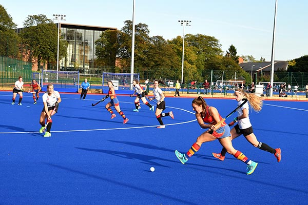
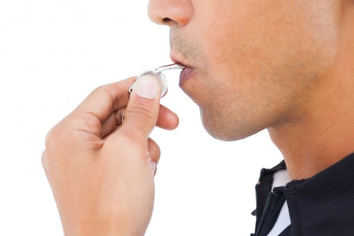
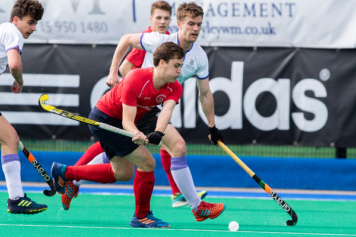
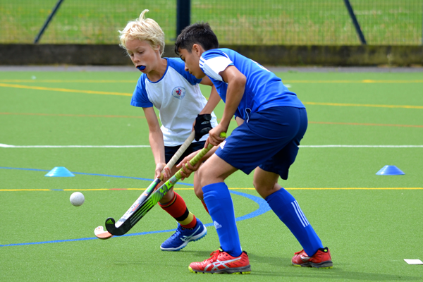

Pre-season training
With the new season fast approaching, our teams have been getting back into action with their pre-season training. For the past few weeks, they have been training at Stone Hockey Club on Thursday evenings, whilst they have also played an inter-squad friendly to increase match sharpness
Umpire position
We are currently seeking a qualified Umpire, Level 1 assessed or above, to travel with our teams and umpire throughout the 2022/23 season and beyond.
We play in the Midlands league and our fixtures start from Saturday 15th October 2022.
Changes to Men's fixtures
Following the withdrawal of some lower Nottingham based teams to form their own development league, there have been some fixture changes within our league. This includes the opening round of fixtures, which are still scheduled for Saturday 1st October
The Men's team will now face Bloxwich on the opening day rather than Wednesbury, who they instead travel to the following week.
Junior opportunities
Our elite junior team will enter England Hockey indoor and outdoor competitions, giving them the opportunity to play at the highest level. The past couple of years have been a learning curve at such a high standard, but also excellent for player development with competitive Sunday fixtures supplementing junior hockey on Saturdays.